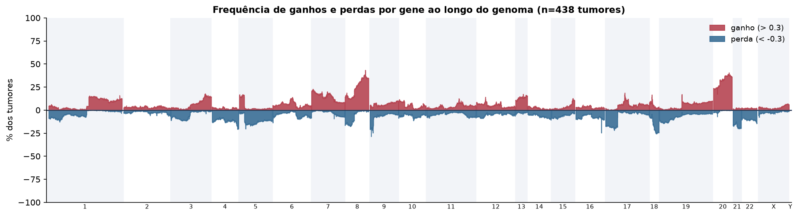
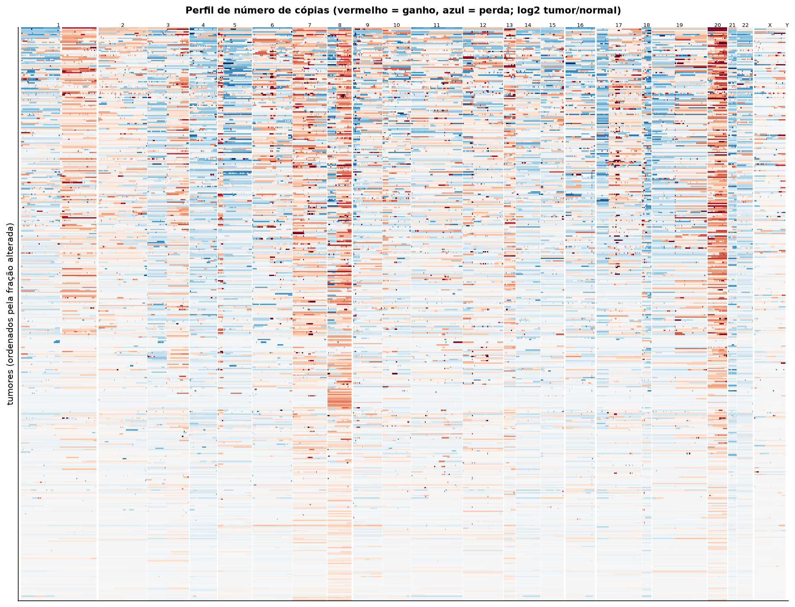
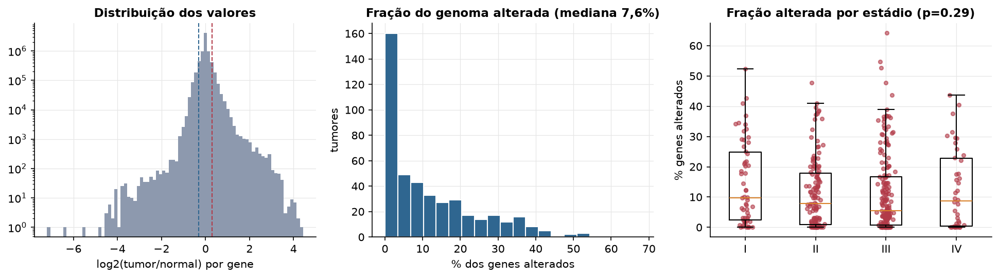
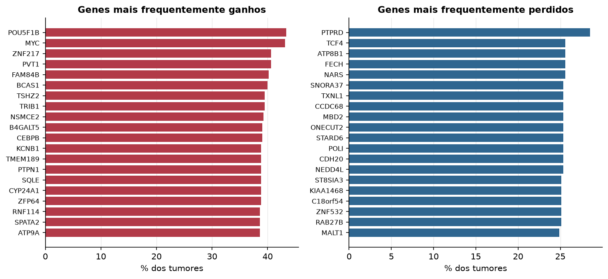

STAD · Número de cópias (CNV)
Affymetrix SNP6, segmentos whitelisted do PanCanAtlas · gerado em 22/10/2026 04:35
438tumores
17.738genes
7,6%fração alterada mediana
155segmentos/tumor (mediana)
Fonte: SNP6 whitelisted (PanCanAtlas); nível de gene calculado dos segmentos (hg19)
O valor por gene é o do segmento que cobre o meio do gene (log2 tumor/normal, hg19). Sem correção de pureza e ploidia: tumores com pouca célula tumoral têm valores atenuados. Para chamadas discretas (−2 a 2), use o GISTIC2 do PanCanAtlas ou o ABSOLUTE.
Principais resultados
- Mediana de 7,6% dos genes com ganho ou perda por tumor (limiares log2 de 0.3 e -0.3).
- O cromossomo com mais ganhos em média é o 20 (29,4% dos tumores por gene) e o com mais perdas é o 21 (16,7%).
- Genes mais ganhos: POU5F1B (43%), MYC (43%), ZNF217 (41%), PVT1 (41%), FAM84B (40%), BCAS1 (40%). Genes mais perdidos: PTPRD (29%), TCF4 (26%), ATP8B1 (26%), FECH (26%), NARS (26%), SNORA37 (25%).
- Fração alterada por estádio: Kruskal-Wallis p=0.29.
Paisagem ao longo do genoma


Carga de alterações

Genes recorrentes

Top 25 genes por frequência de ganho
| gene | chrom | % ganho | % perda | média log2 |
|---|---|---|---|---|
| POU5F1B | 8 | 43.4 | 0.2 | 0.323 |
| MYC | 8 | 43.2 | 0.2 | 0.325 |
| ZNF217 | 20 | 40.6 | 0 | 0.33 |
| PVT1 | 8 | 40.6 | 0.2 | 0.287 |
| FAM84B | 8 | 40.2 | 0.2 | 0.282 |
| BCAS1 | 20 | 40 | 0.2 | 0.308 |
| TSHZ2 | 20 | 39.5 | 0 | 0.308 |
| TRIB1 | 8 | 39.5 | 0.2 | 0.268 |
| NSMCE2 | 8 | 39.3 | 0.2 | 0.267 |
| B4GALT5 | 20 | 39 | 0 | 0.281 |
| CEBPB | 20 | 39 | 0 | 0.28 |
| KCNB1 | 20 | 38.8 | 0 | 0.275 |
| TMEM189 | 20 | 38.8 | 0 | 0.278 |
| PTPN1 | 20 | 38.8 | 0.2 | 0.272 |
| SQLE | 8 | 38.8 | 0.2 | 0.259 |
| CYP24A1 | 20 | 38.8 | 0.5 | 0.295 |
| ZFP64 | 20 | 38.8 | 0 | 0.291 |
| RNF114 | 20 | 38.6 | 0 | 0.277 |
| SPATA2 | 20 | 38.6 | 0 | 0.276 |
| ATP9A | 20 | 38.6 | 0 | 0.284 |
| NFATC2 | 20 | 38.6 | 0 | 0.284 |
| PFDN4 | 20 | 38.6 | 0.5 | 0.292 |
| SALL4 | 20 | 38.6 | 0 | 0.285 |
| TMEM189-UBE2V1 | 20 | 38.6 | 0 | 0.278 |
| FAM49B | 8 | 38.6 | 0.5 | 0.256 |
Top 25 genes por frequência de perda
| gene | chrom | % ganho | % perda | média log2 |
|---|---|---|---|---|
| PTPRD | 9 | 4.3 | 28.5 | -0.213 |
| TCF4 | 18 | 1.8 | 25.6 | -0.168 |
| ATP8B1 | 18 | 2.1 | 25.6 | -0.163 |
| FECH | 18 | 2.1 | 25.6 | -0.163 |
| NARS | 18 | 2.1 | 25.6 | -0.163 |
| SNORA37 | 18 | 2.5 | 25.3 | -0.163 |
| TXNL1 | 18 | 2.1 | 25.3 | -0.163 |
| CCDC68 | 18 | 2.5 | 25.3 | -0.162 |
| MBD2 | 18 | 2.5 | 25.3 | -0.163 |
| ONECUT2 | 18 | 2.3 | 25.3 | -0.161 |
| STARD6 | 18 | 2.5 | 25.3 | -0.163 |
| POLI | 18 | 2.5 | 25.3 | -0.163 |
| CDH20 | 18 | 2.3 | 25.3 | -0.164 |
| NEDD4L | 18 | 2.1 | 25.3 | -0.163 |
| ST8SIA3 | 18 | 2.1 | 25.1 | -0.161 |
| KIAA1468 | 18 | 2.5 | 25.1 | -0.161 |
| C18orf54 | 18 | 2.5 | 25.1 | -0.162 |
| ZNF532 | 18 | 2.1 | 25.1 | -0.164 |
| RAB27B | 18 | 2.5 | 25.1 | -0.16 |
| MALT1 | 18 | 2.1 | 24.9 | -0.161 |
| GRP | 18 | 2.1 | 24.9 | -0.162 |
| WDR7 | 18 | 2.1 | 24.9 | -0.16 |
| CCBE1 | 18 | 2.1 | 24.9 | -0.162 |
| ALPK2 | 18 | 2.1 | 24.9 | -0.16 |
| SEC11C | 18 | 2.1 | 24.9 | -0.162 |